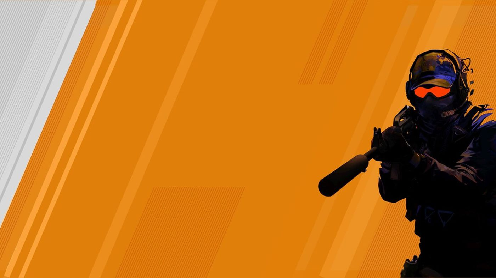
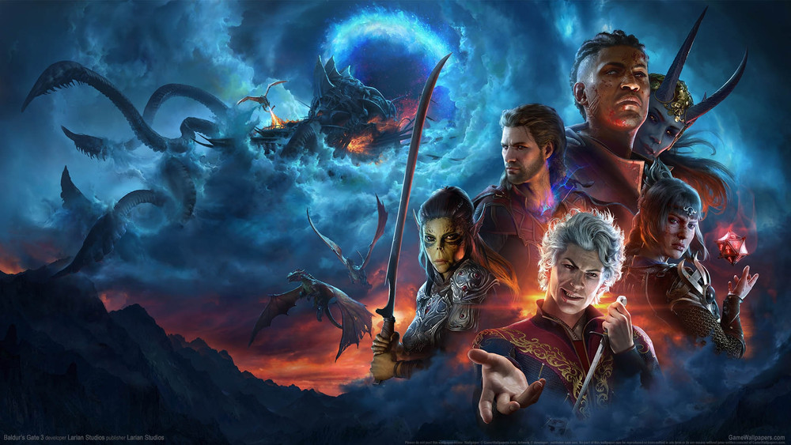
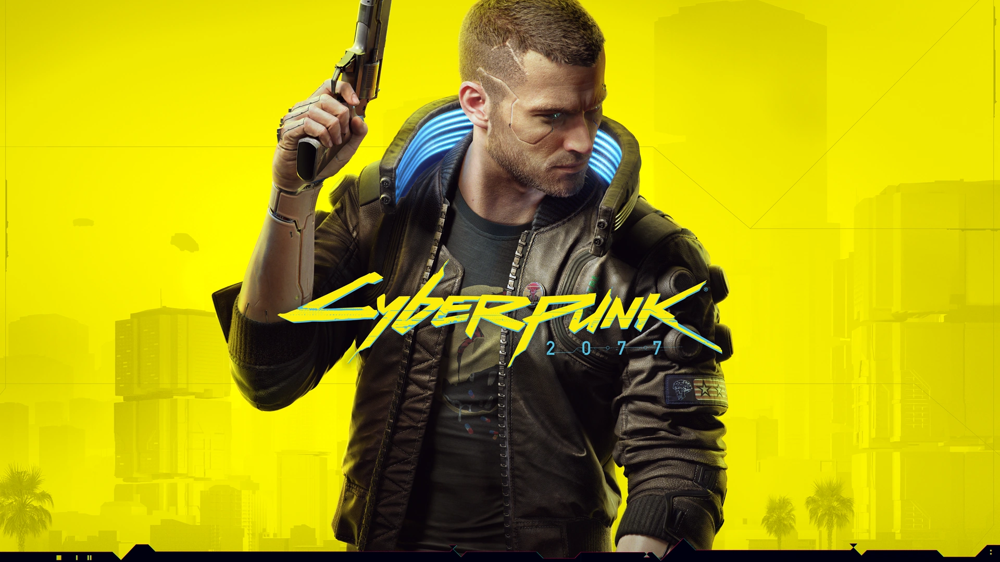
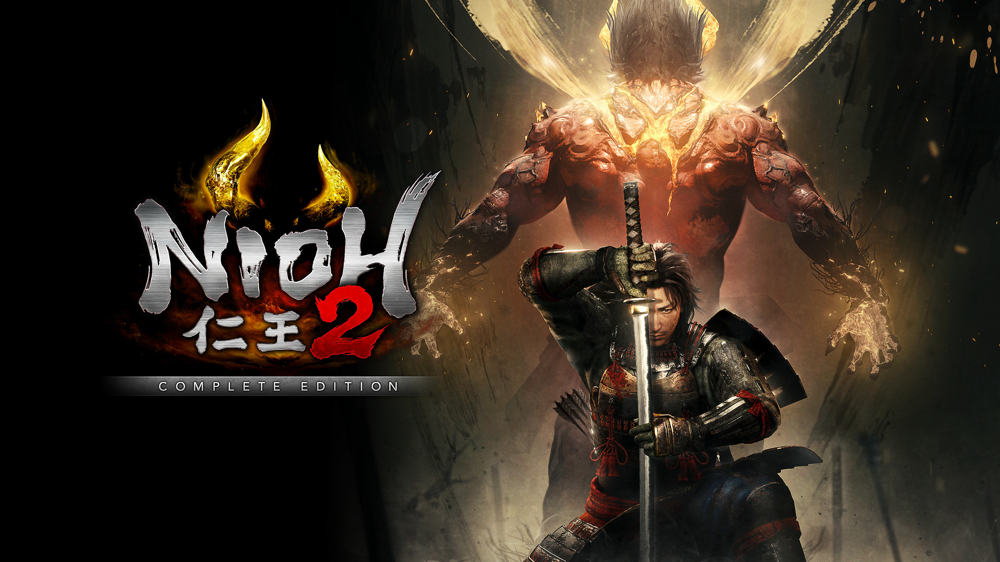
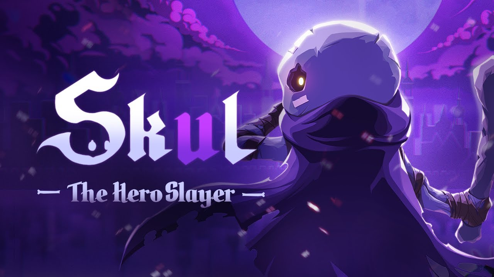

Here you find the News About you`re favorite games.
FPS : "The first-person shooter (FPS) genre stands as a pillar in the realm of video games, immersing players in heart-pounding action from the protagonist's viewpoint. With titles like 'Call of Duty' and 'Battlefield,' FPS games have dominated the gaming landscape, offering intense combat experiences and strategic gameplay. Among them, 'Call of Duty: Modern Warfare' holds the title as one of the most sold games in history, captivating millions with its gripping narrative and adrenaline-fueled multiplayer battles. FPS games continue to evolve, pushing the boundaries of graphics, storytelling, and competitive multiplayer, leaving gamers perpetually curious about what groundbreaking experiences the future holds."
RPG : Role-Playing Game (RPG): "Role-playing games (RPGs) transport players into immersive worlds where they embark on epic quests, forge alliances, and shape their destinies. From the sprawling landscapes of 'The Elder Scrolls' series to the rich narratives of 'Final Fantasy,' RPGs offer unparalleled depth and freedom. With character customization, branching storylines, and dynamic combat systems, RPGs ignite the imagination and keep players engaged for hours on end, eager to uncover every secret and conquer every challenge."
OPEN WOLRD : "Open-world games invite players to explore vast and boundless landscapes teeming with adventure and discovery. From the bustling streets of 'Grand Theft Auto' to the untamed wilderness of 'The Legend of Zelda: Breath of the Wild,' open-world games grant unparalleled freedom and immersion. With no shortage of activities, secrets, and dynamic encounters scattered throughout the expansive environments, players are continually drawn to the allure of exploration, curiosity driving them to uncover every hidden treasure and unravel every mystery."
SOULSLIKE : "Soulslike games epitomize challenge and mastery, delivering punishing yet rewarding gameplay experiences. Inspired by the notorious difficulty of 'Dark Souls,' these games demand precise timing, strategic decision-making, and unwavering determination from players. From the haunting atmosphere of 'Bloodborne' to the intricate level design of 'Sekiro: Shadows Die Twice,' Soulslike games test the limits of skill and perseverance, captivating players with their steep learning curves and the euphoria of overcoming seemingly insurmountable odds."
ROGUELIKE : "Roguelike games offer an ever-shifting landscape of danger and opportunity, where each playthrough presents a new and unpredictable challenge. With procedurally generated levels, permadeath mechanics, and a myriad of items and abilities to discover, roguelikes ensure that no two adventures are alike. Whether braving the depths of 'The Binding of Isaac' or navigating the treacherous dungeons of 'Enter the Gungeon,' players must adapt quickly, embracing risk and uncertainty as they strive for mastery and elusive victory."